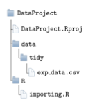
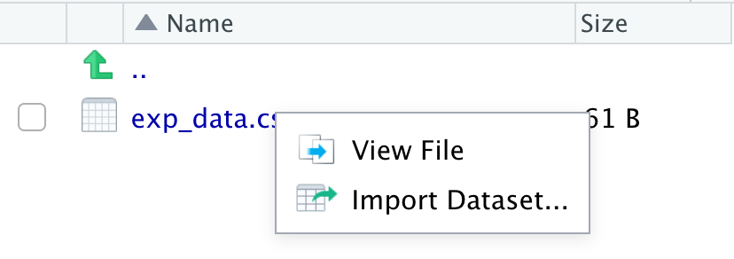

Code
library(here)
library(data.table)
library(dplyr)Claudius Gräbner-Radkowitsch
June 16, 2026
June 16, 2026
Packages used in this tutorial:
Functions for importing data take a path to a file, parse that file, and return an R object (usually a kind of data.frame) containing the data.
The most widely used file format for data is .csv — comma separated values. Its big advantage is that it is platform-independent and requires no external software. The downside is that .csv files are relatively large and slower to read than modern binary formats. For most datasets a student will encounter, these disadvantages are irrelevant, making .csv a safe default.
While writing data is usually straightforward, reading data can be frustrating: there are many ways a .csv file can be structured. The package data.table provides data.table::fread(), which handles almost every variation automatically or with minimal configuration. It is also substantially faster than the tidyverse alternative from readr.
If you read about data import in tidyverse-focused textbooks, you will find readr functions rather than data.table::fread(). This is one of the few places where breaking dialect consistency is worthwhile: fread() is much faster and more flexible. The only cost is that it returns a data.table rather than a tibble — easily fixed with tibble::as_tibble().
This tutorial assumes you already have an R project set up with a proper directory structure — see the tutorial on Setting Up an R Project if you have not done this yet.
Assume the dataset you want to import is called exp_data.csv and sits in your project’s data/tidy/ folder. Your project structure looks like this:

Before importing, it is good practice to inspect the raw file in RStudio’s file preview to understand its structure (for large files, use a text editor instead):

The file in our example looks like this:
iso2c,year,exports
AT,2012,53.97
AT,2013,53.44
AT,2014,53.38This is a standard CSV: comma-separated columns, dot as decimal sign. With default arguments, data.table::fread() reads it correctly — you only need to pass the file path:
# A tibble: 3 × 3
iso2c year exports
<chr> <int> <dbl>
1 AT 2012 54.0
2 AT 2013 53.4
3 AT 2014 53.4The most important optional arguments are:
sep: column separatordec: decimal signcolClasses: force column typesselect / drop: include or exclude specific columnsnrows / skip: limit rows read or skip file headersheader: whether the first row contains column namessep and decIn Germany (and many other European countries), ; is used as the column separator and , as the decimal sign. The same data in this format looks like:
iso2c;year;Exporte
AT;2012;53,97
AT;2013;53,44
AT;2014;53,38fread() often detects non-standard formats automatically, but it is always better to be explicit — it also makes the import faster:
After any import, inspect the result before proceeding:
# A tibble: 2 × 3
iso2c year exports
<chr> <int> <dbl>
1 AT 2012 54.0
2 AT 2013 53.4Or use dplyr::glimpse() or str():
colClassesfread()’s automatic type detection is generally good, but it fails in one important case: numerical codes with leading zeros. Product codes like HS codes are a common example:
commoditycode,complexity
0101,0.06
0102,-0.49
0103,0.51Without specifying types, fread() reads commoditycode as double, silently stripping the leading zero:
# A tibble: 5 × 2
commoditycode complexity
<int> <dbl>
1 101 0.06
2 102 -0.49
3 103 0.51
4 104 -1.12
5 105 -0.17Specify the column types via colClasses to preserve leading zeros:
# A tibble: 5 × 2
commoditycode complexity
<chr> <dbl>
1 0101 0.06
2 0102 -0.49
3 0103 0.51
4 0104 -1.12
5 0105 -0.17For data with many columns, rep() saves typing — e.g. rep("double", 6) for six consecutive double columns.
nrows and skipSpecifying column types requires knowing the column structure. For large files you cannot open in a text editor, read a small number of rows first:
# A tibble: 1 × 3
iso2c year exports
<chr> <int> <dbl>
1 AT 2012 54.0Some files contain a text header above the actual data:
This is awesome data from 2012-2014
It was compiled by Claudius
He also added this useless header
iso2c,year,Exporte
AT,2012,53.97Reading without skip produces garbled output:
# A tibble: 1 × 6
V1 It was compiled be Claudius
<chr> <chr> <chr> <chr> <chr> <chr>
1 He also added this useless header Pass skip = 3 to ignore the first three rows:
# A tibble: 3 × 3
iso2c year Exporte
<chr> <int> <dbl>
1 AT 2012 54.0
2 AT 2013 53.4
3 AT 2014 53.4select and dropTo read only a subset of columns — useful for speed with large files:
# A tibble: 2 × 2
year exports
<int> <dbl>
1 2012 54.0
2 2013 53.4You can combine select with type specification using a named vector:
# A tibble: 2 × 2
year exports
<dbl> <dbl>
1 2012 54.0
2 2013 53.4Alternatively, drop specifies columns to exclude:
# A tibble: 2 × 2
year exports
<int> <dbl>
1 2012 54.0
2 2013 53.4.rds and .RDataR has two proprietary formats that are fast, compressed, and platform-compatible — but can only be opened with R.
.rds stores a single object. Read it with readRDS():
.RData can store multiple objects. Read with load() — note that the objects are placed directly into your environment with their original names, without any assignment:
.dtaThe haven package reads Stata’s native format:
haven also supports SAS and SPSS formats via similarly named functions.
data.table::fwrite() is the fastest function for writing CSV files and the natural companion to fread():
CSV is the right default for sharing data: it is platform-independent and readable by any software.
For single objects, saveRDS() with optional compression:
For multiple objects at once, save():
Use R-native formats when all consumers of the data use R — they are faster and smaller than CSV for large datasets.
The ImportData exercise set in the DataScienceExercises package covers the main concepts from this tutorial:
See the blog post on DataScienceExercises for installation instructions.
help(fread) — the full reference for all fread() arguments@misc{gräbner-radkowitsch2026,
author = {Gräbner-Radkowitsch, Claudius},
editor = {Gräbner-Radkowitsch, Claudius},
title = {Importing and {Exporting} {Data} in {R}},
date = {2026-06-16},
url = {https://euf-methodology-hub.netlify.app/resources/r-programming/importing-exporting-data},
langid = {en}
}
---
title: "Importing and Exporting Data in R"
description: "How to read CSV files into R using data.table::fread(), handle common format variations (separators, decimal signs, leading zeros), and save data to CSV, RDS, RData, and Stata formats."
author: "Claudius Gräbner-Radkowitsch"
date: 2026-06-16
date-modified: 2026-06-16
image: ../../assets/images/placeholder.png
learning-objectives:
- "Import a CSV file using data.table::fread() and convert it to a tibble"
- "Handle common import challenges: non-standard separators, decimal signs, leading zeros, and file headers"
- "Select or drop specific columns and limit rows when reading large files"
- "Export data to CSV, RDS, RData, and Stata formats and choose the right format for each use case"
categories:
- R
- data-cleaning
- BA
- tutorial
level:
- BA
content-type: tutorial
citation:
type: entry
container-title: "Methods Hub"
title: "Importing and Exporting Data in R"
editor:
- name: "Claudius Gräbner-Radkowitsch"
url: https://euf-methodology-hub.netlify.app/resources/r-programming/importing-exporting-data
---
```{r, include=FALSE}
knitr::opts_chunk$set(echo = TRUE, fig.align = "center")
```
**Packages used in this tutorial:**
```{r, warning=FALSE, message=FALSE}
library(here)
library(data.table)
library(dplyr)
```
## Video lecture
```{=html}
<div class="embed-container">
<iframe width="560" height="315"
src="https://www.youtube-nocookie.com/embed/videoseries?si=jQeCMrsHboEtQDJD&list=PLZDawQMrG1RK05hizCTxDROrbvdACAy0h"
title="YouTube video player" frameborder="0"
allow="accelerometer; autoplay; clipboard-write; encrypted-media; gyroscope; picture-in-picture; web-share"
referrerpolicy="strict-origin-when-cross-origin" allowfullscreen>
</iframe>
</div>
```
## Introduction
Functions for importing data take a path to a file, parse that file, and return an
R object (usually a kind of `data.frame`) containing the data.
The most widely used file format for data is `.csv` — comma separated values. Its big
advantage is that it is platform-independent and requires no external software. The
downside is that `.csv` files are relatively large and slower to read than modern binary
formats. For most datasets a student will encounter, these disadvantages are irrelevant,
making `.csv` a safe default.
While *writing* data is usually straightforward, *reading* data can be frustrating: there
are many ways a `.csv` file can be structured. The package
[data.table](https://github.com/Rdatatable/data.table) provides `data.table::fread()`,
which handles almost every variation automatically or with minimal configuration. It is
also substantially faster than the tidyverse alternative from `readr`.
::: {.callout-note}
## Why not readr?
If you read about data import in tidyverse-focused textbooks, you will find `readr`
functions rather than `data.table::fread()`. This is one of the few places where
breaking dialect consistency is worthwhile: `fread()` is much faster and more flexible.
The only cost is that it returns a `data.table` rather than a `tibble` — easily fixed
with `tibble::as_tibble()`.
:::
This tutorial assumes you already have an R project set up with a proper directory
structure — see the tutorial on
[Setting Up an R Project](setting-up-an-r-project.qmd) if you have not done this yet.
## Importing CSV data with fread
Assume the dataset you want to import is called `exp_data.csv` and sits in your project's
`data/tidy/` folder. Your project structure looks like this:
```{r echo=FALSE}
knitr::include_graphics("dir_structure.png", auto_pdf = TRUE)
```
Before importing, it is good practice to inspect the raw file in RStudio's file preview
to understand its structure (for large files, use a text editor instead):
```{r echo=FALSE, out.width="60%"}
knitr::include_graphics("ViewFile.png", auto_pdf = TRUE)
```
The file in our example looks like this:
```
iso2c,year,exports
AT,2012,53.97
AT,2013,53.44
AT,2014,53.38
```
This is a standard CSV: comma-separated columns, dot as decimal sign. With default
arguments, `data.table::fread()` reads it correctly — you only need to pass the file path:
```{r, eval=FALSE}
here::i_am("R/importing.R")
file_path <- here::here("data/tidy/exp_data.csv")
exp_data <- data.table::fread(file = file_path)
exp_data <- tibble::as_tibble(exp_data)
exp_data
```
```{r, echo=FALSE}
exp_data <- tibble::as_tibble(data.table::fread("data/exp_data.csv"))
exp_data
```
The most important optional arguments are:
- `sep`: column separator
- `dec`: decimal sign
- `colClasses`: force column types
- `select` / `drop`: include or exclude specific columns
- `nrows` / `skip`: limit rows read or skip file headers
- `header`: whether the first row contains column names
### Separator and decimal sign: `sep` and `dec`
In Germany (and many other European countries), `;` is used as the column separator
and `,` as the decimal sign. The same data in this format looks like:
```
iso2c;year;Exporte
AT;2012;53,97
AT;2013;53,44
AT;2014;53,38
```
`fread()` often detects non-standard formats automatically, but it is always better to
be explicit — it also makes the import faster:
```{r, eval=FALSE}
exp_data <- data.table::fread(
file = file_path,
sep = ";",
dec = ","
)
```
After any import, inspect the result before proceeding:
```{r}
exp_data <- tibble::as_tibble(exp_data)
head(exp_data, n = 2)
```
Or use `dplyr::glimpse()` or `str()`:
```{r}
str(exp_data)
```
### Column types: `colClasses`
`fread()`'s automatic type detection is generally good, but it fails in one important
case: numerical codes with leading zeros. Product codes like HS codes are a common example:
```
commoditycode,complexity
0101,0.06
0102,-0.49
0103,0.51
```
Without specifying types, `fread()` reads `commoditycode` as `double`, silently stripping
the leading zero:
```{r, eval=FALSE}
file_path <- here::here("data/tidy/exp_data_hs.csv")
exp_prod_data <- data.table::fread(file = file_path)
tibble::as_tibble(exp_prod_data)
```
```{r, echo=FALSE}
exp_prod_data <- data.table::fread(file = "data/exp_data_hs.csv")
tibble::as_tibble(exp_prod_data)
```
Specify the column types via `colClasses` to preserve leading zeros:
```{r, eval=FALSE}
exp_prod_data <- data.table::fread(
file = file_path,
colClasses = c("character", "double")
)
tibble::as_tibble(exp_prod_data)
```
```{r, echo=FALSE}
exp_prod_data <- data.table::fread(
file = "data/exp_data_hs.csv",
colClasses = c("character", "double")
)
tibble::as_tibble(exp_prod_data)
```
For data with many columns, `rep()` saves typing — e.g. `rep("double", 6)` for six
consecutive double columns.
### Reading a subset of rows: `nrows` and `skip`
Specifying column types requires knowing the column structure. For large files you cannot
open in a text editor, read a small number of rows first:
```{r, eval=FALSE}
exp_data <- tibble::as_tibble(data.table::fread(
file = here::here("data/tidy/exp_data.csv"),
nrows = 1)
)
exp_data
```
```{r, echo=FALSE}
exp_data <- tibble::as_tibble(data.table::fread("data/exp_data.csv", nrows = 1))
exp_data
```
Some files contain a text header above the actual data:
```
This is awesome data from 2012-2014
It was compiled by Claudius
He also added this useless header
iso2c,year,Exporte
AT,2012,53.97
```
Reading without `skip` produces garbled output:
```{r, eval=FALSE}
exp_data <- data.table::fread(
file = here::here("data/tidy/exp_data_header.csv")
)
tibble::as_tibble(exp_data)
```
```{r, echo=FALSE, warning=FALSE}
exp_data <- tibble::as_tibble(data.table::fread(
file = "data/exp_data_header.csv", nrows = 3))
exp_data
```
Pass `skip = 3` to ignore the first three rows:
```{r, eval=FALSE}
exp_data <- tibble::as_tibble(data.table::fread(
file = here::here("data/tidy/exp_data_header.csv"),
skip = 3)
)
exp_data
```
```{r, echo=FALSE, warning=FALSE}
exp_data <- tibble::as_tibble(data.table::fread(
file = "data/exp_data_header.csv", skip = 3))
exp_data
```
### Selecting columns: `select` and `drop`
To read only a subset of columns — useful for speed with large files:
```{r, eval=FALSE}
exp_data <- data.table::fread(
file = here::here("data/tidy/exp_data.csv"),
nrows = 1,
select = c("year", "exports")
)
exp_data <- tibble::as_tibble(exp_data)
exp_data
```
```{r, echo=FALSE}
exp_data <- data.table::fread(
file = "data/exp_data.csv",
nrows = 2,
select = c("year", "exports")
)
exp_data <- tibble::as_tibble(exp_data)
exp_data
```
You can combine `select` with type specification using a named vector:
```{r, eval=FALSE}
exp_data <- data.table::fread(
file = here::here("data/tidy/exp_data.csv"),
nrows = 1,
select = c("year" = "double", "exports" = "double")
)
exp_data <- tibble::as_tibble(exp_data)
exp_data
```
```{r, echo=FALSE}
exp_data <- data.table::fread(
file = "data/exp_data.csv",
nrows = 2,
select = c("year" = "double", "exports" = "double")
)
exp_data <- tibble::as_tibble(exp_data)
exp_data
```
Alternatively, `drop` specifies columns to exclude:
```{r, eval=FALSE}
exp_data <- data.table::fread(
file = here::here("data/tidy/exp_data.csv"),
nrows = 1,
drop = "iso2c"
)
exp_data <- tibble::as_tibble(exp_data)
exp_data
```
```{r, echo=FALSE}
exp_data <- data.table::fread(
file = "data/exp_data.csv",
nrows = 2,
drop = "iso2c"
)
exp_data <- tibble::as_tibble(exp_data)
exp_data
```
## Importing other file formats
### R-native formats: `.rds` and `.RData`
R has two proprietary formats that are fast, compressed, and platform-compatible — but
can only be opened with R.
`.rds` stores a single object. Read it with `readRDS()`:
```{r, eval=FALSE}
data_set <- readRDS(file = here::here("data/tidy/exp_data.Rds"))
```
`.RData` can store multiple objects. Read with `load()` — note that the objects are
placed directly into your environment with their original names, without any assignment:
```{r, eval=FALSE}
load(here::here("data/tidy/test_data.RData"))
```
```{r, include=FALSE}
test_dat <- data.frame(a = 1:2, b = 3:4)
test_vec <- "Test vector"
```
```{r}
test_dat
```
```{r}
test_vec
```
### Stata files: `.dta`
The [haven](https://github.com/tidyverse/haven) package reads Stata's native format:
```{r, eval=FALSE}
dta_data <- haven::read_dta(file = here::here("data/tidy/exp_data.dta"))
```
`haven` also supports SAS and SPSS formats via similarly named functions.
## Exporting data
### CSV with fwrite
`data.table::fwrite()` is the fastest function for writing CSV files and the natural
companion to `fread()`:
```{r, eval=FALSE}
data.table::fwrite(
x = test_data,
file = here::here("data/tidy/test_data.csv")
)
```
CSV is the right default for sharing data: it is platform-independent and readable by
any software.
### R-native formats
For single objects, `saveRDS()` with optional compression:
```{r, eval=FALSE}
saveRDS(
object = test_data,
file = here::here("data/tidy/test_data.Rds"),
compress = "gz" # gz = fast, bz2 = smallest, xz = middle ground
)
```
For multiple objects at once, `save()`:
```{r, eval=FALSE}
save(
list = c("test_data", "another_object"),
file = here::here("data/tidy/datacollection.RData")
)
```
Use R-native formats when all consumers of the data use R — they are faster and smaller
than CSV for large datasets.
### Stata format
```{r, eval=FALSE}
haven::write_dta(
data = test_data,
path = here::here("data/tidy/test_data.dta")
)
```
## Practice
The `ImportData` exercise set in the `DataScienceExercises` package covers the main
concepts from this tutorial:
```{r, eval=FALSE}
learnr::run_tutorial(
name = "ImportData",
package = "DataScienceExercises",
shiny_args = list("launch.browser" = TRUE)
)
```
See the [blog post on DataScienceExercises](../../blog/2026-06-16-datascienceexercises/index.qmd)
for installation instructions.
## Further reading
- [Efficient R Input/Output](https://csgillespie.github.io/efficientR/efficient-inputoutput.html) — benchmark comparison of file formats and read/write functions
- [R data frame benchmark](https://data.nozav.org/tutorial/2019-r-data-frame-benchmark/) — detailed speed comparison
- `help(fread)` — the full reference for all `fread()` arguments
<script src="https://giscus.app/client.js"
data-repo="graebnerc/research-methodology-hub"
data-repo-id="R_kgDOS7J-4w"
data-category="Comments"
data-category-id="DIC_kwDOS7J-484C_N51"
data-mapping="pathname"
data-strict="0"
data-reactions-enabled="1"
data-emit-metadata="0"
data-input-position="bottom"
data-theme="preferred_color_scheme"
data-lang="en"
crossorigin="anonymous"
async>
</script>